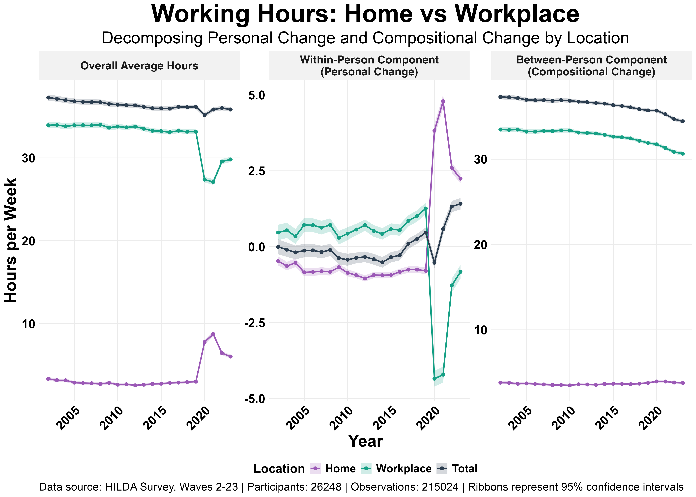

Last week, I posted about a paradox: while the Australian national average work week has reduced by 3.1 hours since 2001, individuals' working hours are increasing.
A lot of you had a great question: is this "within-person" increase driven by the rise of working from home? Are we logging "extra" hours in our personal time now that we have the flexibility?
To answer this question, I went back to the HILDA survey and broke down the within-person trends and between-person compositional change in "hours worked at the workplace" and "hours worked at home".
Here's what the results show:
Pre-COVID (2009–2019): Before the pandemic, the slow (within-person) creep in our working hours was almost entirely driven by more time at the workplace. In 2019, people were working about 1 hour more at their official workplace than they were a decade prior, while hours worked from home remained virtually unchanged.
During-COVID (2020–2021): This period caused a massive, temporary shift. On average, people worked 4 hours more from home than they did in years prior as offices shut down.
Post-COVID (2022 to present): As people returned to the office, their WFH hours dropped but did not return to pre-COVID levels. In 2023, employees worked about 3.5 hours more from home per week than they did in 2019. However, they only worked about 2 hours less in the office, creating a net gain of over an hour in their total work week.

So, is working from home driving the increase in our personal workloads? Yes and no.
The data points to two distinct drivers:
- A steady, pre-COVID trend of increasing hours at the office that pre-dated the increase in working from home.
- A post-COVID shift to hybrid, where the new hours at home have been added on top of a smaller reduction in office hours, resulting in a longer total work week.
For many workers, hybrid work hasn't replaced office time but supplemented it. The flexibility to work from home has come with an unexpected cost of longer total working hours.